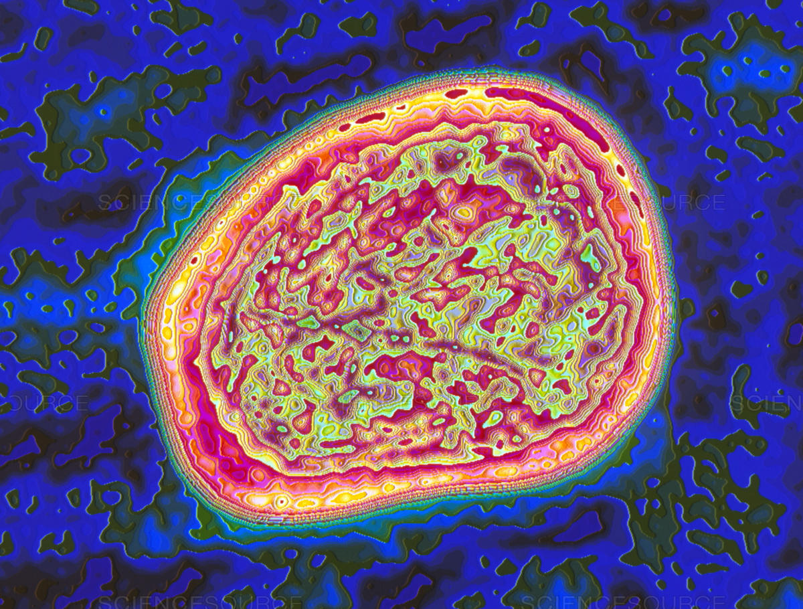

Mumps
Mumps is a disease caused by a RNA virus that can be acquired through the air. It can lead to fatigue, fever, and inflammation of the parotid gland. It can also lead to the inflammation of the testicles and pancreas. Furthermore, it can cause deafness, meningitis, and death. Since the development of the mumps vaccine, incidence of the disease has dropped significantly. In 2012 there were only 229 cases of mumps.

The mumps vaccine is a live virus vaccine (the virus is weakened and will not cause disease). It is a very efficacious vaccine (about 88% effective). The vaccine is able to confer lifelong immunity to mumps. The mumps vaccine is often combined with the measles and the rubella vaccine as MMR. The first MMR shot should be given when the child is around 12 months of age. The second dose of the MMR shot should be given at around the age of 4-6. Cohort studies have demonstrated that the MMR vaccine does not induce autism.
Adapted From:
1. Centers for Disease Control and Prevention. (2015). Mumps. In Hamborsky J., Kroger A., Wolfe S., (Eds.), Epidemiology and Prevention of Vaccine-Preventable Diseases (13th ed., 247-57). Washington D.C. Public Health Foundation.
Image from: https://www.sciencesource.com/archive/Mumps-virus-SS2115974.html